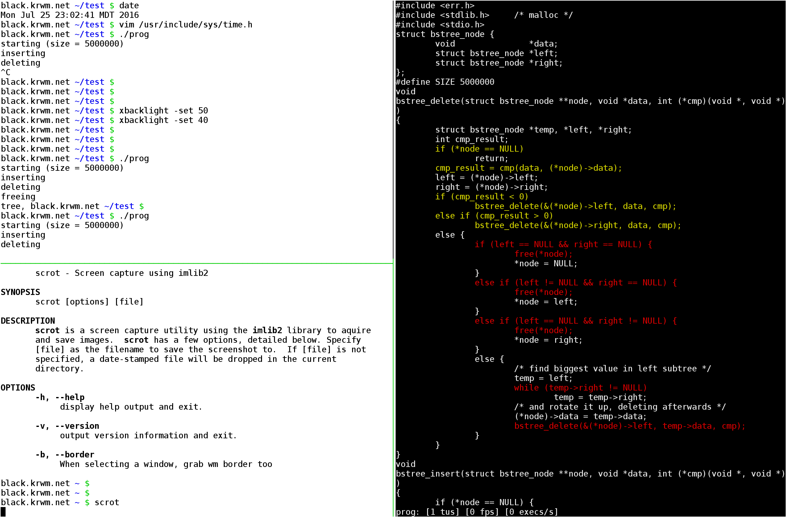

C It Run lets you watch code execute. It tries to help programmers get an intuitive feel for their programs.
The main advantages to C It Run are that hot execution paths can be easily identified and that execution flow can be summarized at a glance.

The C/C++ programming languages are supported on UNIX like systems.
Each utility has its own manual. This list is sorted by decreasing relevance: